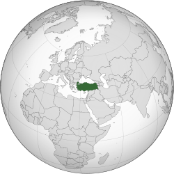

Welcome
Turkey,[a] officially the Republic of Türkiye,[b] is a country mainly in Anatolia in West Asia, with a smaller part called East Thrace in Southeast Europe. It borders the Black Sea to the north; Georgia, Armenia, Azerbaijan, and Iran to the east; Iraq, Syria, and the Mediterranean Sea (and Cyprus) to the south; and the Aegean Sea, Greece, and Bulgaria to the west.
Turkey is home to over 85 million people; most are ethnic Turks, while ethnic Kurds are the largest ethnic minority.Officially a secular state, Turkey has a Muslim-majority population. Ankara is Turkey's capital and second-largest city; Istanbul is its largest city, and its economic and financial center, as well as the largest city in Europe. Other major cities include İzmir, Bursa and Antalya.
Human habitation began in the Late Paleolithic. Home to important Neolithic sites like Göbekli Tepe and some of the earliest farming areas, present-day Turkey was inhabited by various ancient peoples. Hattians were assimilated by the incoming Anatolian peoples. Increasing diversity during Classical Anatolia transitioned into cultural Hellenization following the conquests of Alexander the Great; Hellenization continued during the Roman and Byzantine eras.] The Seljuk Turks began migrating into Anatolia in the 11th century, starting the Turkification process. The Seljuk Sultanate of Rum ruled Anatolia until the Mongol invasion in 1243, when it disintegrated into Turkish principalities. Beginning in 1299, the Ottomans united the principalities and expanded; Mehmed II conquered Istanbul in 1453. During the reigns of Selim I and Suleiman the Magnificent, the Ottoman Empire became a global power. From 1789 onwards, the empire saw major transformation, reforms, and centralization while its territory declined.

In the 19th and early 20th centuries, persecution of Muslims during the Ottoman contraction and in the Russian Empire resulted in large-scale loss of life and mass migration into modern-day Turkey from the Balkans, Caucasus, and Crimea.[27] Under the control of the Three Pashas, the Ottoman Empire entered World War I in 1914, during which the Ottoman government committed genocides against its Armenian, Greek and Assyrian subjects.[28][29][30] After its defeat, the Ottoman Empire was partitioned.[31] The Turkish War of Independence resulted in the abolition of the sultanate in 1922 and the signing of the Treaty of Lausanne in 1923. The Republic was proclaimed on 29 October 1923, modelled on the reforms initiated by the country's first president, Mustafa Kemal Atatürk. Turkey remained neutral during most of World War II,[32] but was involved in the Korean War. Coups in 1960 and 1980 interrupted the transition to a multi-party system.
Turkey is an upper-middle-income and emerging country; its economy is the world's 18th-largest by nominal GDP and 11th-largest by purchasing power parity. It is a unitary presidential republic. Turkey is a founding member of the OECD, G20, and Organization of Turkic States. With a geopolitically significant location, Turkey is a regional power[34] and an early member of NATO. An EU-candidate, Turkey is part of the EU Customs Union, CoE, OIC, and TURKSOY. Turkey has coastal plains, a high central plateau, and various mountain ranges; its climate is temperate with harsher conditions in the interior.[35] Home to three biodiversity hotspots,[36] Turkey is prone to frequent earthquakes and is highly vulnerable to climate change.[37][38] Turkey has universal healthcare, growing access to education,[39] and increasing innovativeness.[40] It is a leading TV content exporter.[41] With 21 UNESCO World Heritage sites, 30 UNESCO intangible cultural heritage inscriptions,[42] and a rich and diverse cuisine,[43] Turkey is the fourth most visited country in the world.